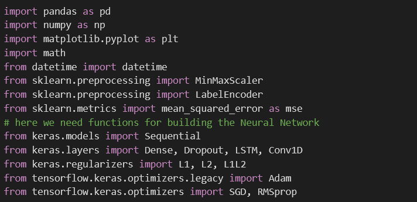
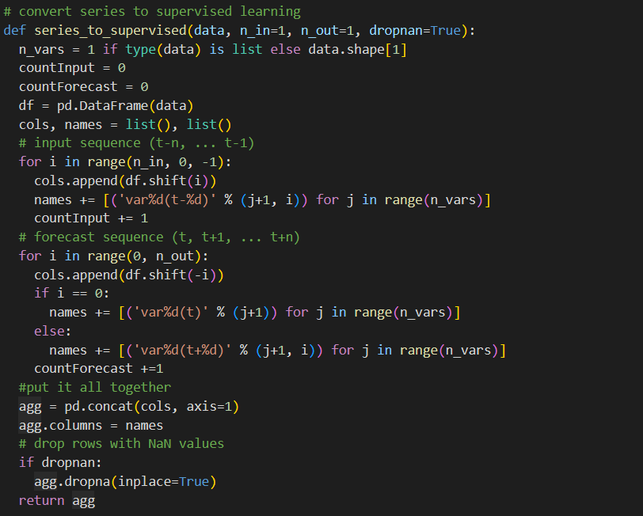
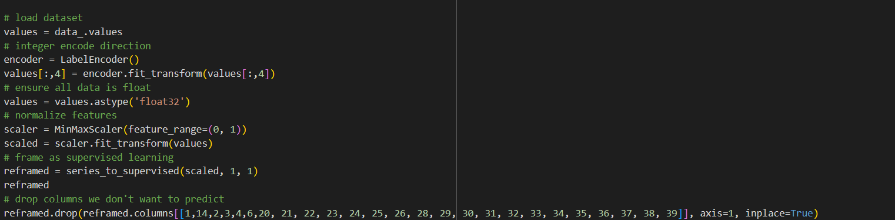
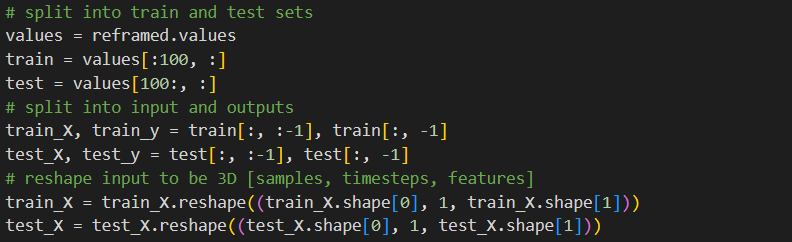
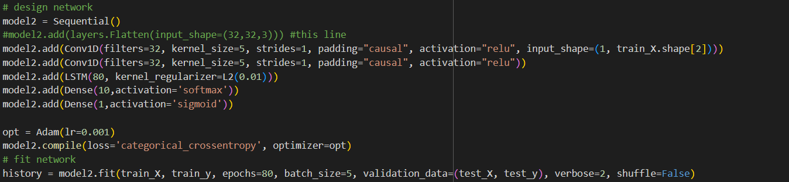
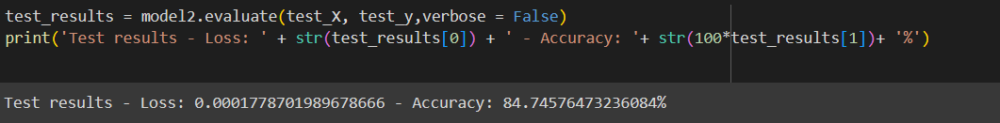

Introduction:
For this project I will be using a deep learning model to predict recessions.
I will begin with a brief overview of the problem and a review of previous
literature, and follow with an overview of the data I will be using. Then
I will go over how the model itself works and the results I got. Overall my
model does a pretty good job at classifying whether a quarter will be a
recession or not.
Economists have been trying to accurately predict economic downturns for as long as
it has been a discipline. With recent developments in machine learning and neural
networks, it is becoming increasingly more likely that this could become a reality.
Even before machine learning took off, economists attempted to predict recessions
found some success using a variable know as "term spread". Term spread is the difference
between interest rates on long term bonds, typically 10 or 5 year bonds, and short
term bonds, which fall between 1 year and 3 months. Two highly cited papers,
Wheelock and Wohar (2009) and Mehl (2008) provide a good overview of the literature correlating
term spread to economic output and give an example of a model using standard economic practice
instead of machine of learning. Both papers are careful to highlight the lack of an agreed-upon
theory that realtes the two variables, only that the relationship appears to exist.
More recently, papers have been published using machine learning to predict recessions using
the term spread. Mullainathan and Spiess (2017) introduced the economic community to the
possibility of machine learning being used for major problems, with close to 1000 citations
and providing major inspiration for this project. Vrontos, Galakis, and Vrontos (2021) looked
at term spread a recessions using mulitple different machine learning techniques, inlcuding logit
regression, gradient boosting, random forest, and k-nearest neighbors to name a few. This paper
provided inspiration for further variables to use in addition to term spread and how to use them.
Data:
The data I used for this project was taken from the Federal Reserve Economic Database (FRED) of St Louis.
All the data is for the United States and is taken at intervals of quarters of a year since 1982-2021.
The variables I settled on for my final model were: term spread of 10 year and 3 month treasury bonds,
growth rate of total industry exlcuding construction, the sticky consumer price index (CPI; this is a standard
measure of inflation), private direct investment into residential investments as percent of GDP, the
non-cylcical rate of unemployment (NROU; a standard measure of unemployment that is more stable over time than
the unemployment rate), the employment to population ratio, population growth rate, gross national income growth
rate, GDP per capita growth rate, GDP growth rate, CPI for energy, CPI for food, standard unemployment rate,
the real M2 money supply, and household liabilities as a percentage of income. The output variable is a binary variable,
where 1 represents a quarter where a recessions took place and 0 does not, inferred by the Federal Reserve based
on a GDP recession indicator. The following graphic displays the variables overtime.
Methodology:
To predict the recessions, I used a Long Short-Term Memory (LSTM) model. It is a recurrent neural network (RNN) that excels
at learning from time series data. At its most basic, an RNN takes and input, produces and output, and then that output
is fed back as an input of the network over multiple iterations. The image below is a good representation of this:

Clearly these models would be great for analyzing time series data because they can connect information from earlier in the
network to correctly determine an output later on. A problem arises when the relavent information is too far back in the network
for the model to use correcly. That is where an LSTM comes in; they were built to understand long-term dependencies.

In the above diagram, the top line has the least interactions and is where information can travel largely unchanged from
iteration to iteration. Note that there are two pink nodes where it can be changed. In the first column of the bottom row,
the model decides what the get rid of and what to keep. In the next two columns, the model decides what information to update
(as opposed to keep/remove), and then updates the top row accordingly. Finally, the model combines the relavent information
from the top and bottome rows, and sends that as an output to the next iteration and as main output for that iteration.
Notice how the model keeps some of the lightly altered top row as part of the long term inforamtion for the next iteration.
This is how LSTMs work at the most basic level, although there are other ways to implement them, and this is how I will conduct the
analysis on my data.
Analysis/Code:
After importing numpys, pandas, and the preprocessed data, we need to import the necessary libraries to build the neural network.

Then I need to convert the series to supervised learning with the following function. This will alow the data to be used
by the tensorflow model.

Then I scale the data and drop the columns I don't intend to use (I imported more columns than I specified in the Data section),
most importantly dropping the input variables for y and the output variable for x

Then the data is split into train and test sets:

Finally I design and run the model. I use two convoluted layers and regularize the LSTM model using Lasso to not set
any of the parameters are zero. The output layer is sigmoid since this is essentially a classification problem, either a
recession or not a recession.

And I return the loss and accuracy of the model:

Overall it does a pretty good job.
Conclusion:
There is certainly more work that could be done to try and predict recesions. Models can always be improved, and
this one is no exception. Working around NaN values in my data frame was difficult, and more data could always
be collected. And as machine learning algorithms become increaseinly adept at prediction, economist's
jobs will become easier and easier.